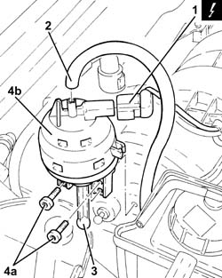
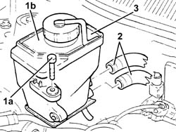
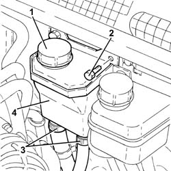
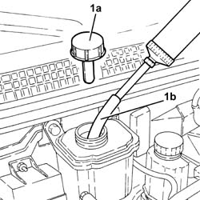
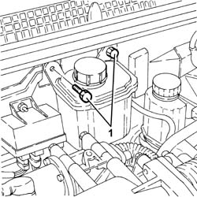
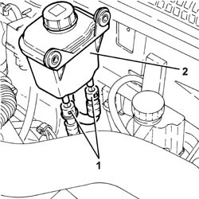

4130B10 POWER STEERING FLUID RESEVOIR R R
- Path
- Procedures > 41 STEERING UNIT > 4130 POWER STEERING > 4130B POWER STEERING HYDRAULIC SYTEM > 4130B10 POWER STEERING FLUID RESEVOIR R R
- Kind
- repair procedure (removal / refitting; the operation number is the code)
- Applies to
- all engines; all production periods
- Interactive page
- https://sloeber94.github.io/elrnDB-aGt/en/#/125001408
Applies to: engines: 1.8 T.SPARK, 2.0 JTS; all production periods
 Removing
Removing
 Refitting
RefittingEnsure that the ignition key is in the OFF position, then disconnect the negative battery terminal (-).
Name | Connector | |
|---|---|---|
- | Battery |
Proceed with removal
Op. 1016A40 IGNITION COIL COVER ON CYLINDER HEAD- R+R
Drain the power steering fluid from the reservoir using a suitable syringe.
1. Disconnect the electrical connection from the enablement solenoid of the changeover device actuator.
2. Disconnect the vacuum intake pipe from the air flow switching device actuator and release it from the fastening.
Name | Connector | |
|---|---|---|
1 | Variable geometry control solenoid |
3. Disconnect the linkage for the air flow switching control actuator.
4. Undo the bolts (4a) and remove the air flow switching control actuator (4b).

Applies to: engines: 1.8 T.SPARK, 2.0 JTS; all production periods
Release the fuel vapour recovery pipe and the coolant return pipe to the engine coolant supply reservoir from the fastenings on the power assisted steering fluid reservoir.
1. Undo the bolts (1a) and move the power assisted steering fluid reservoir (1b) aside.
2. Loosen the bands and disconnect the coolant supply and return pipes from the power steering fluid reservoir.
3. Remove the power steering fluid reservoir.

Applies to: engines: 1.8 T.SPARK, 2.0 JTS; all production periods
Refitting
RemovingConnect the delivery and return pipes to the power steering reservoir and tighten the bands.
Refit in its seating the power steering fluid reservoir and secure it with its bolts.
Fasten the fuel vapour recovery pipe and the coolant return pipe to the engine coolant supply reservoir to the fastenings on the power assisted steering fluid reservoir.
Fit the air flow switching device actuator in its seating and secure it using the bolts.
Connect the linkage for the air flow switching control actuator.
Connect the air flow switching control actuator vacuum intake pipe and secure it to the fastening.
Connect the electrical connection from the enablement solenoid of the changeover device actuator.
Proceed with refitting
Op. 1016A40 IGNITION COIL COVER ON CYLINDER HEAD- R+R.
Connect the negative (-) battery terminal
Top up the power assisted circuit with the recommended fluid.
 | Type | Component | Name | Qty. |
|---|---|---|---|---|
- | Fluid | POWER ASSISTED STEERING CIRCUIT | TUTELA GI/A | - |
Bleed the power steering system as described below
With the front wheels raised off the ground, with the engine switched off turn the steering wheel to full lock, left and right, 4-5 times.
Check and, if necessary, top up the fluid level in the reservoir.
Position the vehicle on the ground and start up the engine.
Carry out 4 - 5 complete steering wheel rotation cycles (right and left).
Top up the fluid level in the reservoir.
Applies to: engines: 3.2 V6; all production periods
Removing
Refitting1. Remove the power steering fluid reservoir and drain the fluid using a suitable syringe.
Refit the brake fluid reservoir cap.
2. Undo the bolts securing the power steering fluid reservoir.
3. Raise the power assisted steering fluid reservoir as necessary, loosen the band and disconnect the coolant outlet and inlet pipes from the reservoir.
4. Remove the power steering fluid reservoir.

Applies to: engines: 3.2 V6; all production periods
Refitting
RemovingConnect the coolant inlet and outlet pipes to the reservoir and tighten the bands.
Refit in its seating the power steering fluid reservoir and secure it with its bolts.
Refill the power assisted steering circuit using the recommended fluid.
| Type | Component | Name | Qty. |
|---|---|---|---|---|
- | Fluid [l] | HYDRAULIC POWER ASSISTED STEERING SYSTEM | TUTELA GI/A | 1.2 |
Bleed the power steering system as described below
With the front wheels raised off the ground, with the engine switched off turn the steering wheel to full lock, left and right, 4-5 times.
Check and, if necessary, top up the fluid level in the reservoir.
Position the vehicle on the ground and start up the engine.
Carry out 4 - 5 complete steering wheel rotation cycles (right and left).
Top up the fluid level in the reservoir.
Applies to: engines: 1.9 JTD 16V; all production periods
Removing
RefittingProceed with removal
- 1016A10 sound-proofing cover - r + r
1. Remove the power steering fluid reservoir cap (1a) and drain the fluid using a suitable syringe (1b).
Refit the brake fluid reservoir cap.

Applies to: engines: 1.9 JTD 16V; all production periods
1. Undo the bolts securing the power steering fluid reservoir.

Applies to: engines: 1.9 JTD 16V; all production periods
1. Move the power assisted steering fluid reservoir away, placing it as illustrated in the diagram, then disconnect the rapid connectors for the power assisted steering fluid inlet and outlet pipes from the reservoir.
2. Remove the power steering fluid reservoir.

Applies to: engines: 1.9 JTD 16V; all production periods
Refitting
RemovingConnect the rapid connectors for the power assisted steering fluid inlet and outlet pipes to the reservoir.
Refit in its seating the power steering fluid reservoir and secure it with its bolts.
Refill the power assisted steering circuit using the recommended fluid.
| Type | Component | Name | Qty. |
|---|---|---|---|---|
- | Oli [l] | POWER ASSISTED STEERING CIRCUIT | TUTELA GI/A | 1.2 |
Bleed the power steering system as described below
With the front wheels raised off the ground, with the engine switched off turn the steering wheel to full lock, left and right, 4-5 times.
Check and, if necessary, top up the fluid level in the reservoir.
Position the vehicle on the ground and start up the engine.
Carry out 4 - 5 complete steering wheel rotation cycles (right and left).
Top up the fluid level in the reservoir.
Proceed with refitting
- 1016A10 sound-proofing cover - r + r
.
Topics linked from this page (3)
- 1016A40 IGNITION COIL COVER ON CYLINDER HEAD- R+R
- A1B Battery ( BATTERY NEGATIVE )
- L15 Variable geometry control solenoid